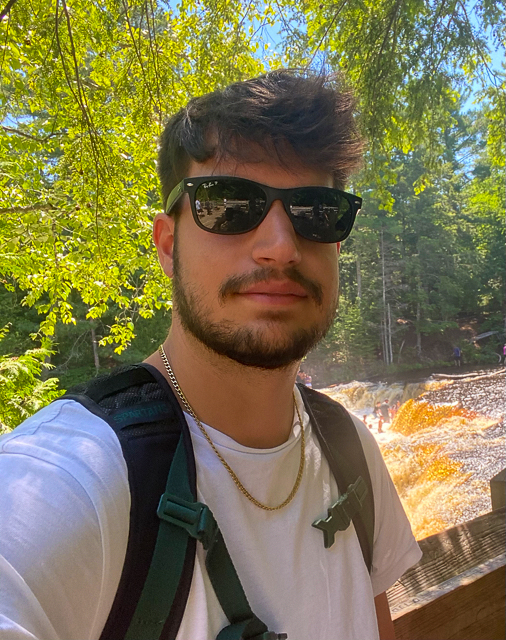

I am currently a senior at Michigan State University working towards my degree in Information Science at the College of Communication arts and sciences. Along with my undergraduate degree, I have been accepted in to the linked Bachelors-Masters program in Media and Information with a focus on Human-Computer Interaction.
While I work on obtaining my masters degree I hope to further increase my web development skills along with becoming a better UX researcher and designer. Navigate through my portfolio to learn more about my coursework at Michigan State along with learning more about me and some of the projects that I have worked on during my time at Michigan State.
Main Skills I Have Acquired
- Html 5 and CSS
- User experience research
- Usability testing websites and applications
- Prototyping applications and websites with proto.io
- Mockups of websites and applications with Figma
- Information Technology Network Management
- Social media management
School Projects I have Worked On
- Heuristic evaluation and cognitive walkthrough of the Signal app
- Usability test and study of the Target website
- Prototype bank application on Proto.io
- Prototype Spartan Spit application on Proto.io
As a technology fan, my studies in web development and User experience and User interface design have been fun to study during my time at Michigan State University. In fact these areas of study really go hand in hand. I believe having a discipline in both web development and creating human-centered designs will allow me to be an asset in the industry.
I would like to work as either a web developer or as a UX researcher, UX designer, Experience Designer, or Interaction Designer.